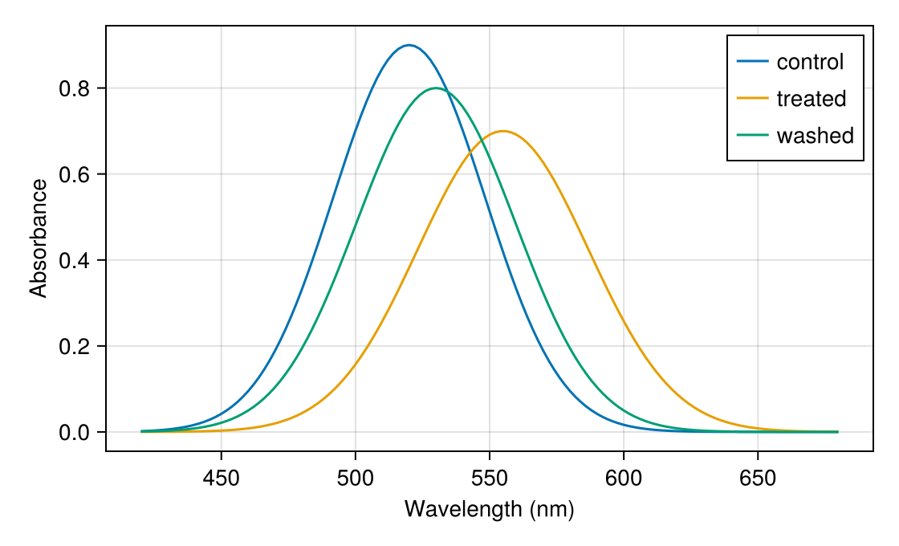

Slice across series
A slice reads several lines at once. As you move the pointer, a vertical line follows it, a dot sits where it crosses each line you gave the slice, and the tooltip lists each of those lines' values at that x. Use it to compare several series at the same position, such as spectra at one wavelength or traces at one time.
Move the pointer across the spectra below:
Notebook as text
Move the pointer across the plot. A vertical line follows it, a dot marks where it crosses each spectrum, and the tooltip lists each spectrum's absorbance at that wavelength.
Plot each spectrum with its own lines! call. A label that starts with a letter and holds only letters, digits, and underscores names that spectrum's row in the tooltip.
begin
peak(λ, center, height, width) = height * exp(-((λ - center) / width)^2)
λ = 420:2:680
control = peak.(λ, 520, 0.9, 40)
treated = peak.(λ, 555, 0.7, 45)
washed = peak.(λ, 530, 0.8, 42)
fig = Figure(size = (560, 340))
ax = Axis(fig[1, 1]; xlabel = "Wavelength (nm)", ylabel = "Absorbance")
a = lines!(ax, λ, control; label = "control")
b = lines!(ax, λ, treated; label = "treated")
c = lines!(ax, λ, washed; label = "washed")
axislegend(ax; position = :rt)
nothing
endPass all three plots to one SliceInteractable, because masque(fig) does not add one on its own. The slice only shows values, so to keep a wavelength, add an AxisInteractable as well. auto = false keeps the lines from taking the click, so a click saves a wavelength rather than a line.
In your own notebook, a click saves the position in at. This page does not record clicks, so only the hover works here.
@bind at masque(
fig,
SliceInteractable([a, b, c]),
AxisInteractable(ax);
auto = false,
)
at starts as nothing. After a click, at.x is the wavelength you clicked, and this cell reads each spectrum at the nearest measured wavelength.
if isnothing(at)
"click a wavelength"
else
i = argmin(abs.(λ .- at.x))
(; wavelength = λ[i], control = control[i], treated = treated[i], washed = washed[i])
endclick a wavelengthAdd a slice
masque(fig) never adds a slice on its own, so pass your line plots to a SliceInteractable yourself:
begin
xs = 0:0.1:10
fig = Figure()
ax = Axis(fig[1, 1])
a = lines!(ax, xs, sin.(xs); label = "sine")
b = lines!(ax, xs, cos.(xs); label = "cosine")
probe = SliceInteractable([a, b])
nothing
endmasque(fig, probe)Each line's label names its row in the tooltip when the label starts with a letter and holds only letters, digits, and underscores, such as sine or run_2. Any other label, such as 450nm or sample A, or no label at all, shows up as s1, s2, and so on, in the order you passed the lines. Two lines with the same label show up as sine and sine_2. The label can't be x on a vertical slice, or y on a horizontal one, because that row already shows the position; SliceInteractable raises an error if it is.
The slice goes on the axis that draws the lines, so pass lines from one axis only.
A slice is for reading values, so hovering does not change the @bind value. Each axis takes one slice, so to read several lines, pass them all to the same slice.
How a slice differs from other interactables
A slice, a threshold, and a brush all draw something across the plot, but they do different jobs. The slice follows the pointer and sends nothing to your notebook. The others stay where you leave them, and your notebook gets their value:
| To get | Use | You | Your notebook gets |
|---|---|---|---|
| The value of each line you pass it, at the pointer | SliceInteractable | hover | nothing |
| Which line you clicked | masque(fig) | click a line | that line (Click marks) |
| The coordinates you clicked | AxisInteractable | click | x and y (Read coordinates) |
| A cutoff | ThresholdInteractable | drag a line | its position (Read coordinates) |
A range of x and y, or the points in it | ROIInteractable | drag a box | the box or the points inside (Brush a region) |
So use a slice to look across your series, and a brush to pick out a part of your data and work with it.
Keep a position
To keep the x you are reading, add an AxisInteractable to the same widget. Hovering still shows the slice's tooltip, and a click saves the position:
@bind at masque(
fig,
SliceInteractable([a, b]),
AxisInteractable(ax);
auto = false,
)auto = false keeps the lines from taking the click, so a click on a line still saves a position rather than the line. at is nothing until the first click. After that, at.x is the x you clicked, and a later cell can read your data there:
if isnothing(at)
"click a position"
else
i = argmin(abs.(xs .- at.x))
(; x = xs[i], sine = sin(xs[i]), cosine = cos(xs[i]))
endWhat it reads
By default, a vertical line follows the pointer, and the tooltip shows each series' y at the pointer's x. orientation = :horizontal reads x at the pointer's y instead. crosshair = false keeps the dots and the tooltip but draws no line.
You can pass a Lines, Stairs, Series, Band, or Density plot, or a vector of them. The slice reads each curve as drawn, so Stairs keeps its steps, and Band and Density give their upper curve. A Band or Density with direction = :y is read horizontally.
The tooltip is a table of the sampled values. To change what it shows, pass a masque"..." template over the same fields, or pass tooltip = false to turn it off. See Tooltips.
Series from data
To read values from data rather than from a plot, pass each series as (; x, y), with an optional id, label, and color. For a vertical slice, x must be increasing, and for a horizontal slice, y must be.
probe = SliceInteractable(ax; series = [(; id = :wide, x = xs, y = ys)])Next to other interactables
A marker or colorbar in the same widget keeps its own tooltip, and hovering a marker hides the slice's line. A slice replaces the hover highlight of the plots you passed it, whatever their ids in the widget. For a slice built from series, or to cover different layers, list them in covers, such as covers = [:lines_2].
A slice needs a 2D Axis; see Supported plots and axes for which axes and scales.
To read a single position instead of a series, see Read coordinates.